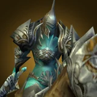

Unit
Hourblade
Hourblade is a tier 5 assassin unit of the Sundered and Cutthroat alliances, and an ace.
Hourblade is a tier 5 (Legendary) assassin unit. It costs 5 gold in the shop and carries the Sundered and Cutthroat alliances. It is an ace.
Ability
 Stilled Hour
Stilled Hour
Freezes time around the target, stunning it and all enemies within 2 cells.
- Cast
- When mana is full. Casting spends all of it.
- Cast point
- 0.3 seconds from the start of the cast to its effect.
- Targets
- Its current target and all enemies within 2 cells of it.
- Applies Stunned (general) (cannot move, attack or cast) to the targets for 2 / 3 / 4 seconds (values per star).
Full details are on the Stilled Hour ability page. See Mana and casting for how mana is gained.
Stats
| Stat | 1 star | 2 stars | 3 stars |
|---|---|---|---|
| Health | 1,500 | 3,000 | 6,000 |
| Attack damage | 140 to 170 | 280 to 340 | 560 to 680 |
| Seconds per attack | 1.2 | 1.2 | 1.2 |
| Attacks per second | 0.83 | 0.83 | 0.83 |
| Wind-up before the hit (seconds) | 0.5 | 0.5 | 0.5 |
| Average damage per second | 129.2 | 258.3 | 516.7 |
| Attack range (cells) | 1 | 1 | 1 |
| Armour | 5 | 5 | 5 |
| Magic resistance | 0% | 0% | 0% |
| Maximum mana | 100 | 100 | 100 |
| Move speed | 290 | 290 | 290 |
| Seconds to cross one cell | 0.44 | 0.44 | 0.44 |
| Projectile speed (cells per second) | None, hits at once | None, hits at once | None, hits at once |
Seconds per attack is the time from the start of one attack to the start of the next, before any attack speed bonus. Average damage per second is the middle of the damage range divided by the seconds per attack, before armour, bonuses and critical strikes.
Cost, upgrades and selling
3 copies of Hourblade at the same star level combine into one copy of the next star level, up to 3 stars. See Star upgrades for how combining works and Gold and income for gold.
| 1 star | 2 stars | 3 stars | |
|---|---|---|---|
| Copies needed | 1 | 3 | 9 |
| Gold to buy those copies | 5 | 15 | 45 |
| Sell value in gold | 5 | 7 | 9 |
| Copies returned to the pool when sold | 1 | 3 | 9 |
The shared pool holds 10 copies of Hourblade for all players together, as it does for every tier 5 unit. See The shared pool and The shop.
Ace effect
Hourblade is the ace of the Cutthroat alliance. Its ace effect is on while it stands on the board and at least one step of that alliance is active. See Aces.
In play, the effect applies to Hourblade itself:
- +25% critical strike chance, critical strikes deal 400% damage instead of the usual 200%
When your shop rolls a tier 5 unit, each unit of that tier is weighted by the copies of it left in the pool. While that alliance is active for you, the weight of Hourblade in that draw is 15% higher. See The shop.
Alliances
 Sundered class
Sundered class
Touched by the nothing at the spire’s heart. Every allied unit’s attacks have a 40% chance to deal 4% of the target’s maximum health as pure damage, at most once every 0.5 seconds.
| Units needed | Effect |
|---|---|
| 3 | When an ally lands an attack (40% chance; at most once every 0.5 seconds), it deals pure damage to the unit it hit equal to 4% of the target's maximum health. Allies summoned later in the fight get this too. |
 Cutthroat class
Cutthroat class
Knife-work in the dark. Cutthroats gain a chance to critically strike, and a critical strike wounds the target, reducing its healing received for 3 seconds.
| Units needed | Effect |
|---|---|
| 3 | Cutthroat units: +15% critical strike chance, critical strikes deal 325% damage instead of the usual 200%. When a Cutthroat unit lands a critical strike, it applies Wounded (Cutthroat, 3 units) (-75% healing received) to the unit it hit for 3 seconds. |
| 6 | Cutthroat units: +25% critical strike chance, critical strikes deal 400% damage instead of the usual 200%. When a Cutthroat unit lands a critical strike, it applies Wounded (Cutthroat, 6 units) (-100% healing received) to the unit it hit for 3 seconds. |
How units are counted towards a step is explained under How alliances count.
Fights well with
These units share an alliance with Hourblade, so fielding them together works towards the same steps.


Other tier 5 units
The other tier 5 units. They cost the same and share the same tier odds. Within the tier, a unit with more copies left in the pool is offered more often, and an ace whose alliance is active for you more often still. See The shop and the Unit stat table.
 Abyssal Archon
Abyssal Archon Blood Matriarch
Blood Matriarch
Cinder Wyrmrider Deep Basilisk
Deep Basilisk Duskmother
Duskmother Mire King
Mire King Soul Tyrant
Soul Tyrant Spire Colossus
Spire Colossus Spire Exemplar
Spire Exemplar